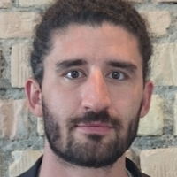

Lucas Betschart President
Email - Twitter
Lucas Betschart is the founder of Blockchain Source, a consulting company focusing on applying Blockchain technologies in the real world. Since early 2014 he has been organizing talks for our local Bitcoin community with top experts from all around the world, connecting and educating startups, corporates and enthusiasts. Lucas believes that technologies like Bitcoin is the only successful and peaceful way to build a freer world, that's why everyone should invest some time to contribute to Bitcoin.

He likes to quote Wayne Gretzky: "I skate to where the puck is going to be, not where it has been."
Mathieu Buffenoir Vice President
Email - Twitter
Mathieu is a bitcoin entrepreneur. He worked years for the old financial industry as a network security engineer before discovering bitcoin and fintechs. Since then, he's focusing both his personnal and professional time on the promotion of cryptocurrencies. He thinks they will be the base of a paradigm shift regarding the way we are exchanging values and accessing to financial services.He likes to quote Wayne Gretzky: "I skate to where the puck is going to be, not where it has been."

Luzius Meisser Founder
Email - Twitter
Luzius is founder of Meisser Economics. He holds a Master in Computer Science from ETH and is currently pursuing a second Master in Economics at the University of Zurich. In between, he founded secure online storage Wuala, which was acquired in 2009 by LaCie and which he left in early 2013. He found out about Bitcoin in early 2011 and was immediately fascinated by its ingenuity. He summarized his views and hopes regarding Bitcoin in an article which was published in 2013 as chapter of the book Next Generation Finance which you can read here. He also wrote a German article explaining Bitcoin for lawyers in a legal journal published by Schulthess.
Raphael Voellmy Treasurer
Bernhard Müller-Hug Event Manager
Bitcoin caught his interest in 2011 and he tries to stay up to date on the topic ever since. He enjoys discussing the social, economical and technical implications. “I don’t know where this is heading exactly but I do know that our children will have a different experience when transmitting and probably also possessing money. Imagining to wait several days for an international payment to clear will be absurd. Immigrant workers will not have to pay double digit percentages to send money home.”, he says.
Bernhard is a Certified Bitcoin Professional (CBP) and likes to share with others, what he learns. Therefore he has given several introductory presentations about Bitcoin and consults on the topic.